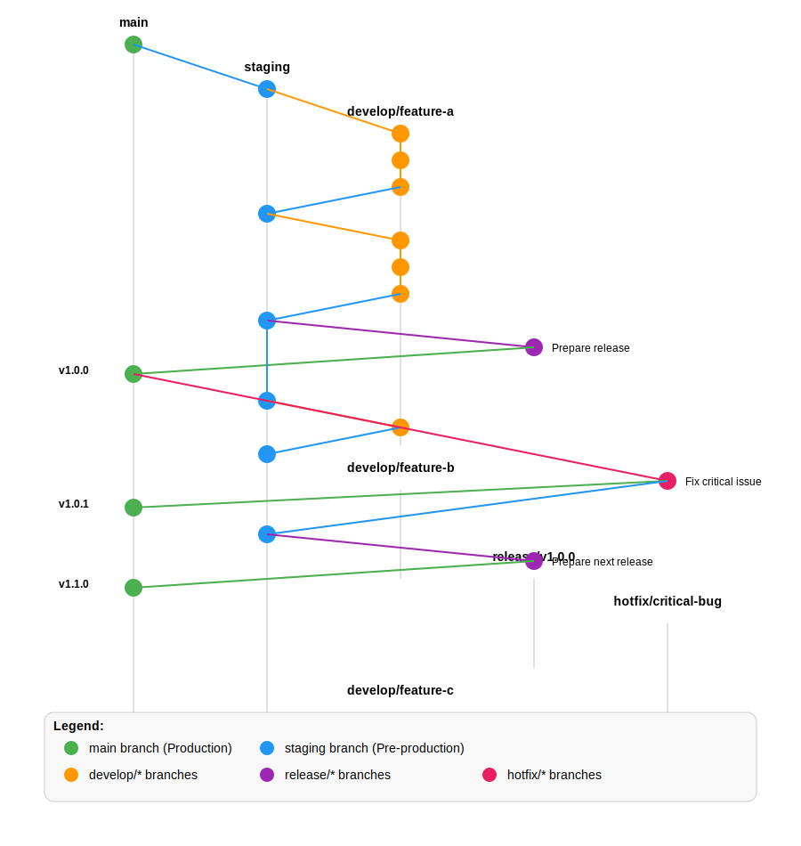

Git Branching Strategy
This document outlines the Git branching strategy used across our projects. This approach is designed to support both continuous integration and structured releases while maintaining a clear, predictable workflow.
Visual Overview

Core Branches
Our workflow revolves around five types of branches, each with a specific purpose:
1. main (Production)
- Purpose: Represents the production-ready state
- Protection: Locked down - no direct commits allowed
- Creation: Initial repository setup only
- Lifetime: Permanent
- Merges From: Only
release/*andhotfix/*branches - Naming: Always
main
2. staging (Pre-production)
- Purpose: Integration branch for all development work
- Protection: Limited - requires PR review
- Creation: Initial repository setup only
- Lifetime: Permanent
- Merges From:
develop/*branches,hotfix/*branches - Naming: Always
staging
3. develop/* (Development)
- Purpose: Implementation of specific features, fixes, or improvements
- Protection: None
- Creation: Branch from
staging - Lifetime: Temporary - deleted after merging
- Merges To:
stagingvia pull request - Naming:
develop/descriptive-name
4. release/* (Release Preparation)
- Purpose: Prepare and finalize a specific release
- Protection: Limited - requires PR review
- Creation: Branch from
stagingwhen ready to release - Lifetime: Temporary - deleted after merging
- Merges To: Both
mainandstaging - Naming:
release/vX.Y.Z(using semantic versioning)
5. hotfix/* (Emergency Fixes)
- Purpose: Address critical issues in production
- Protection: Limited - requires PR review
- Creation: Branch from
main - Lifetime: Temporary - deleted after merging
- Merges To: Both
mainandstaging - Naming:
hotfix/brief-description
Workflow Process
Development Workflow
-
Create a development branch from
staging:git checkout staging git pull git checkout -b develop/my-feature -
Implement changes, committing regularly:
git add . git commit -m "Descriptive message" -
Push branch to remote:
git push -u origin develop/my-feature -
Create pull request to merge into
staging - After review and approval, merge the PR
- Delete the development branch when no longer needed
Release Workflow
-
Create a release branch from
staging:git checkout staging git pull git checkout -b release/v1.0.0 -
Make any final adjustments and version updates:
# Update version numbers in relevant files git add . git commit -m "Prepare release v1.0.0" -
Push branch to remote:
git push -u origin release/v1.0.0 -
Create pull request to merge into
main - After review and approval, merge the PR
-
Tag the release on
main:git checkout main git pull git tag -a v1.0.0 -m "Release v1.0.0" git push origin v1.0.0 -
Merge the release back to
staging:git checkout staging git pull git merge --no-ff release/v1.0.0 git push
Hotfix Workflow
-
Create a hotfix branch from
main:git checkout main git pull git checkout -b hotfix/critical-bug -
Implement the fix:
git add . git commit -m "Fix critical bug" -
Push branch to remote:
git push -u origin hotfix/critical-bug -
Create pull request to merge into
main - After review and approval, merge the PR
-
Tag the hotfix on
main:git checkout main git pull git tag -a v1.0.1 -m "Hotfix v1.0.1" git push origin v1.0.1 -
Merge the hotfix back to
staging:git checkout staging git pull git merge --no-ff hotfix/critical-bug git push
Using Git Clients
Team members may use different Git clients to interact with our repositories. Here's guidance for popular clients that team members currently use:
Using GitKraken with GitFlow
If using GitKraken with GitFlow, the workflow is simplified:
- Initialize GitFlow in the repository
- Select
developas yourstagingbranch - Use GitFlow buttons to:
- Start Feature (creates
develop/*branch) - Finish Feature (merges to
staging) - Start Release (creates
release/*branch) - Finish Release (merges to
mainand back tostaging) - Start Hotfix (creates
hotfix/*frommain) - Finish Hotfix (merges to
mainandstaging)
- Start Feature (creates
Using Fork Git Client
For team members who prefer the Fork Git client:
-
Repository Setup:
- Clone the repository using Fork's clone button
- Switch to the Repository settings to ensure the correct remotes are set up
-
Branch Management:
- Create branches by right-clicking on the source branch (e.g.,
staging) and selecting "Create Branch" - Use our naming conventions:
develop/feature-name,release/vX.Y.Z,hotfix/issue-name
- Create branches by right-clicking on the source branch (e.g.,
-
Development Workflow:
- Use Fork's commit interface with stage/unstage functionality
- View changes with Fork's diff viewer
- Use the "Fetch" and "Pull" buttons regularly to stay up-to-date
-
Pull Requests:
- Push your branch using the "Push" button
- Use Fork's "Create Pull Request" feature (Repository → Create Pull Request) to create PRs to
stagingormain
-
Viewing History:
- Use Fork's graph view to visualize branches and commits
- Filter branches in the sidebar to focus on specific work
-
Stashing Changes:
- Use Fork's stash functionality (Repository → Stash Changes) when you need to switch branches with uncommitted work
Using Command Line Git
For those who prefer the Git command line:
- Follow the workflow process steps outlined earlier in this document
- Use standard Git commands for branching, committing, and pushing
Integration with CI/CD
This branching strategy integrates with our CI/CD pipelines:
- Push to
develop/*: Triggers tests and code quality checks - PR to
staging: Triggers comprehensive test suite and deploys to staging environment - PR to
main: Triggers production deployment preparation - Tag on
main: Triggers production deployment
Versioning Strategy
We follow semantic versioning (MAJOR.MINOR.PATCH):
- MAJOR: Incompatible API changes
- MINOR: New functionality in a backward-compatible manner
- PATCH: Backward-compatible bug fixes
Version bumps are determined by:
- Regular releases: Planned MAJOR or MINOR version increases
- Hotfixes: PATCH version increases
Best Practices
- Keep branches current: Regularly pull changes from
staginginto development branches - Descriptive naming: Use clear, descriptive names for branches
- Clean commits: Make focused, atomic commits with clear messages
- Pull requests: Always use PRs for merging to
stagingandmain - Code reviews: Ensure all PRs receive proper review
- Clean up: Delete branches after they're merged
- Use client tools effectively: Leverage features of your preferred Git client that support this workflow